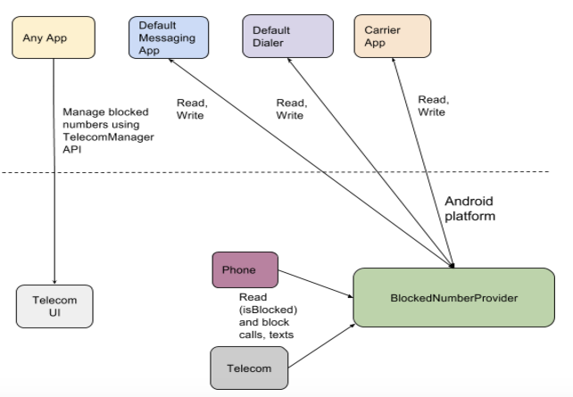

In this document
Because telephony is such an open communications channel - anyone may call or text any number at any time - Android users need the ability to easily block unwanted calls and texts.
Before N, Android users had to rely on downloaded apps to restrict calls and texts from bothersome phone numbers. Many of those apps either do not work as desired or provide a less-than ideal experience because there are no proper APIs for blocking calls and messages.
Some manufacturers might ship their own blocking solutions out-of-the-box, but if users switch devices, they may lose the blocked list completely due to lack of interoperability. Finally, even if users are employing dialing apps and messaging clients that provide such functionality, they likely still have to perform the block action in each app for the block to take effect for both calling and texting.
Features
The Android 7.0 release introduces a BlockedNumberProvider content
provider that stores a list of phone numbers the user has specified should not
be able to contact them via telephony communications (calls, SMS, MMS). The
system will respect the numbers in the blocked list by restricting calls and
texts from those numbers. Android 7.0 displays the list of blocked numbers and
allows the user to add and remove numbers.
Further, the number-blocking feature enables the system and the relevant apps on the platform to work together to help protect the user and to simplify the experience. The default dialer, default messaging client, UICC-privileged app, and apps with the same signature as the system can all directly read from and write to the blocked list. Because the blocked numbers are stored on the system, no matter what dialing or messaging apps the user employs, the numbers stay blocked. Finally, the blocked numbers list may be restored on any new device, regardless of the manufacturer.
- User will be guaranteed to have a blocking feature that works out-of-the-box and will not lose their block list when they switch apps or get a new phone. All relevant apps on the system can share the same list to provide the user with the most streamlined experience.
- App developers do not need to develop their own way to manage a block list and the calls and messages that come in. They can simply use the platform-provided feature.
- Dialer / messenger apps that are selected as the default by the user can
read and write to the provider. Other apps can launch the block list management
user interface by using
createManageBlockedNumbersIntent() - OEMs can use platform provided feature to ship a blocking feature out-of-the-box. OEMs can rest assured that when users switch from another OEM’s device that they have a better onboarding experience because the block list will be transferred as well.
- If carrier has their own dialer or messenger app, they can reuse platform feature for allowing the user to maintain a block list. They can rest assured that the user’s block list can stay with the users, even when they get a new device. Finally, all carrier-privileged apps can read the block list, so if the carrier wants to provide some additional more powerful blocking for the user based on the block list, that is now possible with this feature.
Data flow
Figure 1. Block phone numbers data flow
Examples and source
Here are example calls using the number-blocking new feature:
Launch blocked number manager from app
Context.startActivity(telecomManager.createManageBlockedNumbersIntent(), null);
Query blocked numbers
Cursor c = getContentResolver().query(BlockedNumbers.CONTENT_URI,
new String[]{BlockedNumbers.COLUMN_ID,
BlockedNumbers.COLUMN_ORIGINAL_NUMBER,
BlockedNumbers.COLUMN_E164_NUMBER}, null, null, null);
Put blocked number
ContentValues values = new ContentValues(); values.put(BlockedNumbers.COLUMN_ORIGINAL_NUMBER, "1234567890"); Uri uri = getContentResolver().insert(BlockedNumbers.CONTENT_URI, values);
Delete blocked number
ContentValues values = new ContentValues(); values.put(BlockedNumbers.COLUMN_ORIGINAL_NUMBER, "1234567890"); Uri uri = getContentResolver().insert(BlockedNumbers.CONTENT_URI, values); getContentResolver().delete(uri, null, null);
Implementation
These are the high-level tasks that must be completed to put the number-blocking feature to use:
- OEMs implement call/message-restriction features on their devices by using
BlockedNumberProvider - If carrier has dialer or messenger application, implement call/message
restriction features by using
BlockedNumberProvider - Third-party dialer and messenger app vendors use
BlockedNumberProviderfor their blocking features
Recommendations for OEMs
If the device had previously never shipped with any additional call/message restriction features, use the number-blocking feature in the Android Open Source Project (AOSP) on all such devices. It is recommended that reasonable entry points for blocking are supported, such as blocking a number right from the call log or within a message thread.
If the device had previously shipped with call/message restriction features,
adapt the features so all strict-match phone numbers that are blocked
are stored in the BlockedNumberProvider, and that the behavior
around the provider satisfy the requirements for this feature outlined in the
Android Compatibility Definition Document (CDD).
Any other advanced feature can be implemented via custom providers and custom UI / controls, as long as the CDD requirements are satisfied with regards to blocking strict-match phone numbers. It is recommended that those other features be labeled as “advanced” features to avoid confusion with the basic number-blocking feature.
APIs
Here are the APIs in use:
TelecomManager APIIntent createManageBlockedNumbersIntent()
Carrier ConfigKEY_DURATION_BLOCKING_DISABLED_AFTER_EMERGENCY_INT
- Please refer to
BlockedNumberContract- APIs provided by
BlockedNumberContract boolean isBlocked(Context context, String phoneNumber)int unblock(Context context, String phoneNumber)boolean canCurrentUserBlockNumbers(Context context)
- APIs provided by
User interface
The BlockedNumbersActivity.java user interface provided in AOSP can be used as is. Device implementers may also implement their own version of the UI, as long as it satisfies related CDD requirements.
Please note, the partner’s PC application for backup and restore may be needed
to implement restoration of the block list by using
BlockedNumberProvider. See the images below for the blocked
numbers interface supplied in AOSP.
Figure 2. Block phone numbers user interface
Validation
Implementers can ensure their version of the feature works as intended by running the following CTS tests:
android.provider.cts.BlockedNumberContractTest com.android.cts.numberblocking.hostside.NumberBlockingTest android.telecom.cts.ExtendedInCallServiceTest#testIncomingCallFromBlockedNumber_IsRejected android.telephony.cts.SmsManagerTest#testSmsBlocking
The BlockedNumberProvider can be manipulated using adb commands
after running $ adb root. For example:
$ adb root $ adb shell content query --uri content://com.android.blockednumber/blocked $ adb shell content insert --uri / content://com.android.blockednumber/blocked --bind / original_number:s:'6501002000' $ adb shell content delete --uri / content://com.android.blockednumber/blocked/1